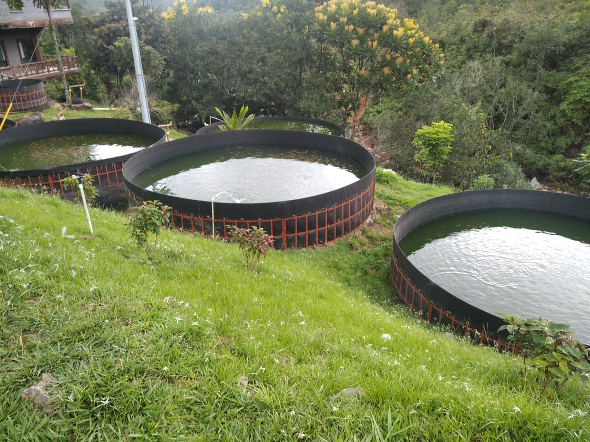
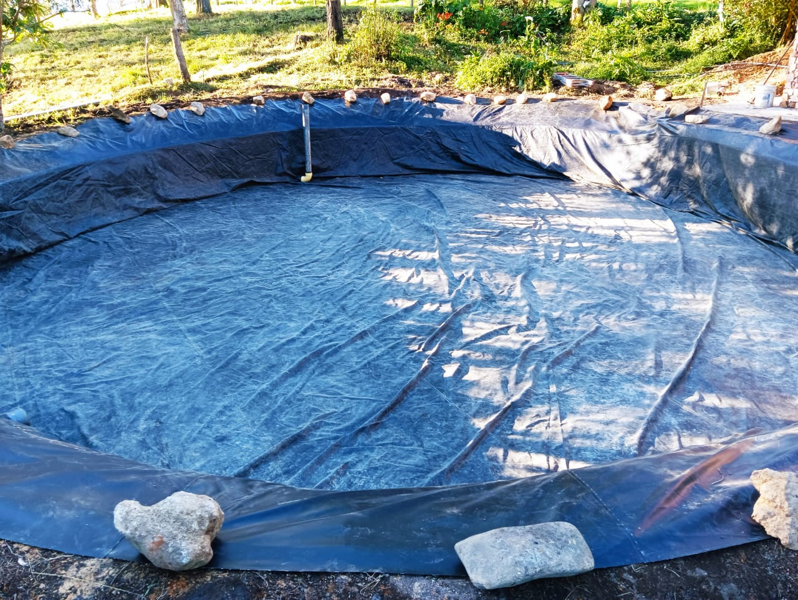
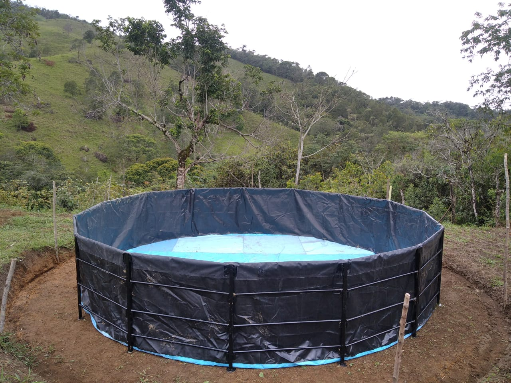
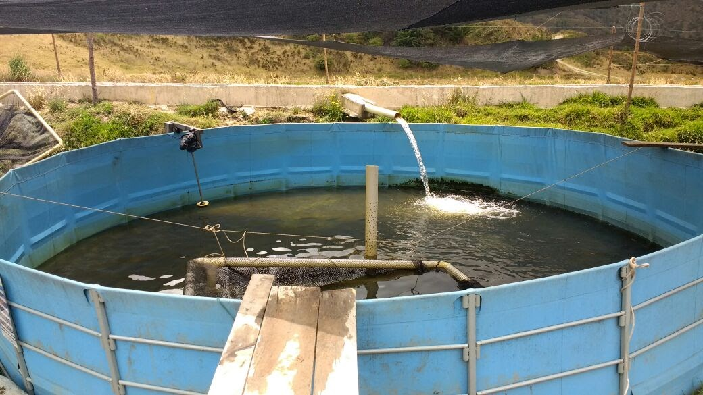
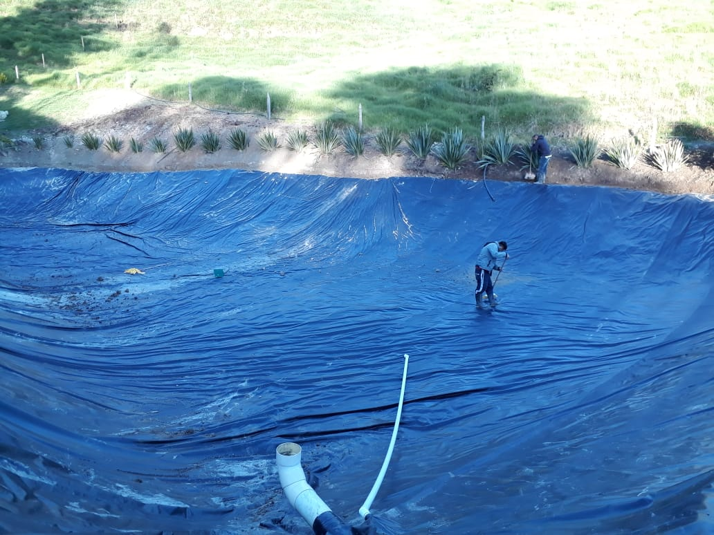
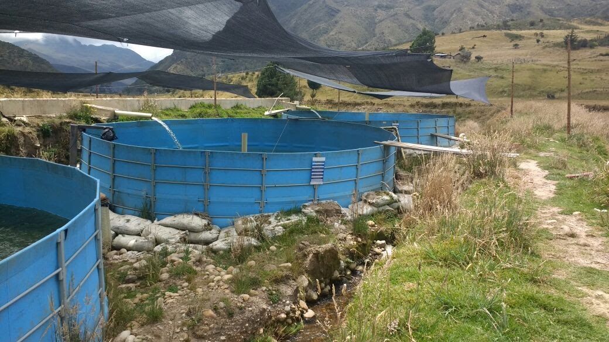
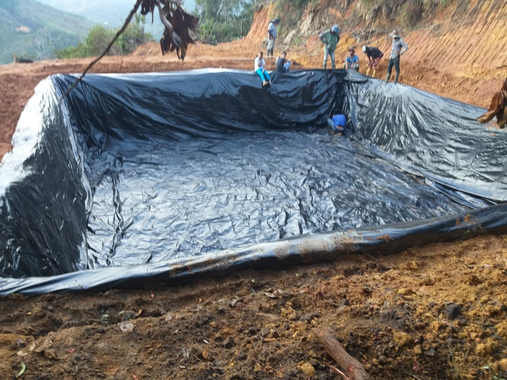
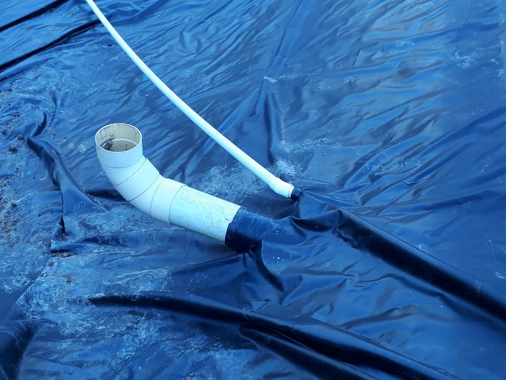

inicio
quienes somos
galeria
nuestras ofertas

Todo Carpas
Geomenbranas

reef restoration

Removed Invasive Species

Breed Displaced Species
Reconnect Habitats

Repaired Damage

Presecribe Controlled Burns

Presecribe Controlled Burns

Presecribe Controlled Burns